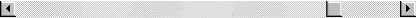

Un ascenseur est utilisé par exemple lorsque le masque est plus large ou plus grand que la fenêtre écran. Il commande alors le déplacement du contenu de la fenêtre dans un sens ou dans l'autre, permettant ainsi la visualisation du masque complet.
L'affichage d'une liste d'objets est un autre exemple d'utilisation. L'ascenseur permet ici de se déplacer rapidement dans la liste.
Un ascenseur peut être horizontal ou vertical et il est divisé en cinq zones :

Extrémités
de l'ascenseur (flèches).
Les deux extrémités contiennent le dessin d'une flèche : flèches
gauche et droite pour un ascenseur horizontal, flèches haute et basse
pour un ascenseur vertical. Cliquer sur une flèche provoque un déplacement
"minimal" du contenu de la fenêtre dans un sens ou dans l'autre
(par exemple, un déplacement d'un élément dans le cas d'une liste).
Curseur.
Le rectangle "plein" situé dans la partie centrale de l'ascenseur
est appelé curseur. Le curseur peut se déplacer d'une extrémité à l'autre
de l'ascenseur et l'on peut faire sur sa taille et sa position les remarques
suivantes :
- Le curseur sera d'autant plus grand que la partie visible du masque
sera importante vis à vis de sa taille totale. Dans le cas d'une liste,
plus la liste comportera d'éléments, plus petit sera le curseur. Si le
curseur occupe toute la place de l'ascenseur, cela signifie que le masque
est entièrement visible ou que tous les éléments de la liste sont présents
à l'écran.
- Sa position permet de situer la partie visible du masque à l'intérieur
de celui-ci. Dans le cas d'une liste, sa position donne une indication
plus ou moins précise de la place qu'occupent les éléments affichés dans
la liste.
Pour bouger le curseur, il faut cliquer dessus puis déplacer la souris
tout en maintenant le bouton enfoncé. La quantité de déplacement dans
le masque ou dans la liste sera bien sûr fonction de l'ampleur du déplacement
du curseur.
Zones
intermédiaires.
Cliquer dans une de ces zones provoque un déplacement "moyen"
du contenu de la fenêtre dans un sens ou dans l'autre (en général un déplacement
d'une page écran).